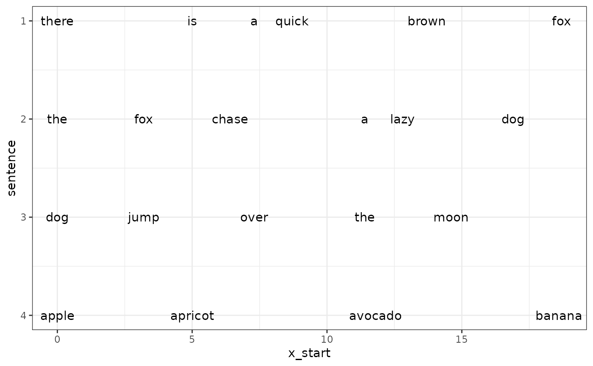

Update x Positions Based on a Computed Difference Updates the x_start and x_end positions in a data frame based on a computed difference.
Source: R/structure.R
update_x_pos.RdUpdate x Positions Based on a Computed Difference
Updates the x_start and x_end positions in a data frame based on a computed difference.
Examples
sentences <- list(
c("there", "is", "a", "quick", "brown", "fox"),
c("the", "fox", "chase", "a", "lazy", "dog"),
c("dog", "jump", "over", "the", "moon"),
c("apple", "apricot", "avocado", "banana")
)
df <-
sentences |>
list2df() |>
add_x_pos() |>
add_index()
for(i in seq_along(sentences)){
con <- connect_with(sentences, i)
# if(is.null(con$sentence_j)) next
diff <- compute_diff_x(df, con)
df <- update_x_pos(df, diff)
}
#> Error in dplyr::filter(df, .data[["sentence"]] == s_i, .data[["index"]] == w_i): ℹ In argument: `.data[["sentence"]] == s_i`.
#> Caused by error:
#> ! 'list' object cannot be coerced to type 'integer'
print(df, n = Inf)
#> # A tibble: 21 × 5
#> sentence word x_start x_end index
#> <int> <chr> <dbl> <dbl> <int>
#> 1 1 there 0 5 1
#> 2 1 is 5 7.3 2
#> 3 1 a 7.3 8.7 3
#> 4 1 quick 8.7 13.7 4
#> 5 1 brown 13.7 18.7 5
#> 6 1 fox 18.7 21.9 6
#> 7 2 the 0 3.2 1
#> 8 2 fox 3.2 6.4 2
#> 9 2 chase 6.4 11.4 3
#> 10 2 a 11.4 12.8 4
#> 11 2 lazy 12.8 16.9 5
#> 12 2 dog 16.9 20.1 6
#> 13 3 dog 0 3.2 1
#> 14 3 jump 3.2 7.3 2
#> 15 3 over 7.3 11.4 3
#> 16 3 the 11.4 14.6 4
#> 17 3 moon 14.6 18.7 5
#> 18 4 apple 0 5 1
#> 19 4 apricot 5 11.8 2
#> 20 4 avocado 11.8 18.6 3
#> 21 4 banana 18.6 24.5 4
df |>
ggplot2::ggplot(ggplot2::aes(x = x_start, y = sentence, label = word)) +
ggplot2::geom_text() +
ggplot2::scale_y_reverse() +
ggplot2::theme_bw()
